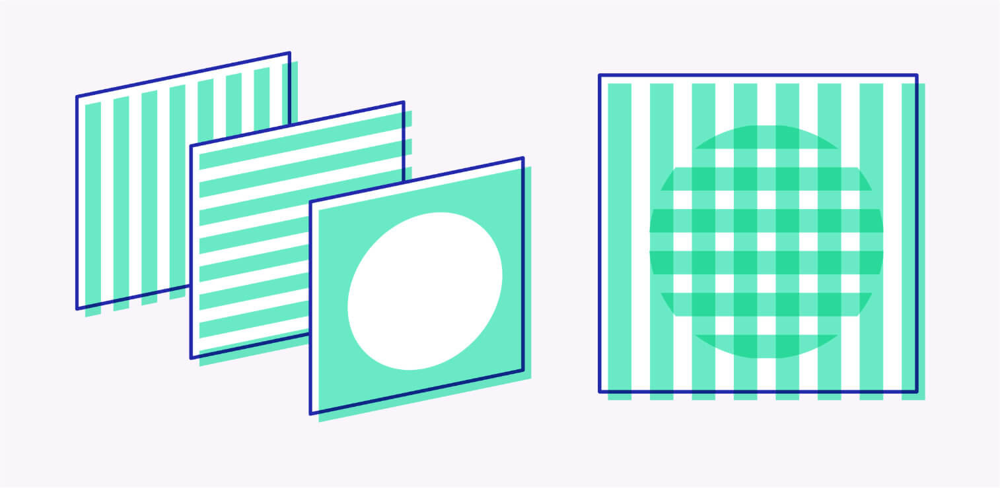
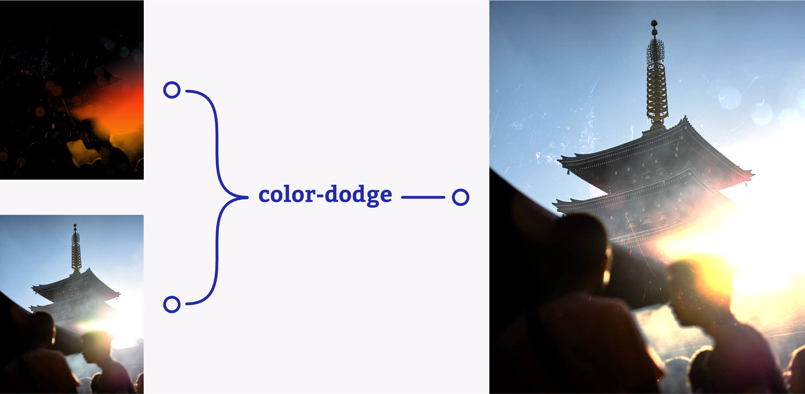

I might be understating it a bit, but WebGL is a big deal. You only need to spend five minutes on one of the many design awards sites to see site-after-site fully leaning into the power of canvas. Tools like threejs make it easier to harness the power of 3D and GLSL shaders and, with that, a whole new level of visual effects.
This got me thinking though; why let JS have all the fun? With mix-blend-mode finally gaining wide browser-support, we now have access to many of most common shading techniques in CSS. With some choice images and a bit of careful layering it's possible to build some surprisingly high-quality effects without the need for introducing any JS dependencies.
Let's take a look at an example. As you scroll past the image below, the sunlight blooms a warm orange, before fading to a cool blue. You'll also briefly see some lens bokeh.
Ooooh shiny. Let's break it down.
What is a CSS 'shader'? permalink
Shaders in the WebGL world are complex GLSL scripts that determine how each individual pixel is rendered to the screen. We still don't have that level of control in our CSS so, at its most basic level, our CSS 'shader' is just an image with additional background-image layers above it. Yes, I'm taking a few liberties with the name but with careful use of gradients, masking, nesting and mix-blend-mode we can manage how these layers interact with both one-another and the image at the bottom of the stack.
For the sake of visualising this core structure, the 'shader' example above is set up with a few nested divs:
<div class="shader">
<img src="tower.jpg" alt="Asakusa at dusk">
<div class="shader__layer specular">
<div class="shader__layer mask"></div>
</div>
</div>To keep each layer aligned with the image at the base, we keep the nested content positioned with the following CSS:
.shader {
position: relative;
overflow: hidden;
backface-visibility: hidden; /* to force GPU performance. More on that later */
}
.shader__layer {
background: black;
position: absolute;
left: 0;
top: 0;
width: 100%;
height: 100%;
background-size: 100%;
}Ok, with the basic layout taken care of, lets take a look at the first layer of our effect - the lighting.
Simulating specularity. permalink
First of all we need to think about how light travels from light to dark across the surface of our image. We'll need an area of brightness where the light is at its most intense, falling off gradually into darkness as the light dissipates. We'll do this with a gradient.
.specular {
background-image: linear-gradient(180deg, black 20%, #3c5e6d 35%, #f4310e, #f58308 80%, black);
}If you imagine looking at a shiny surface, the light that reflects back is known as a specular reflection. How and where that highlight appears is dependant on the light source, but also your viewing angle - the highlight moves with you. Whilst our gradient is looking lovely, it's all a bit static. We'll need to introduce a bit of movement to really sell the effect.
Fortunately, there's a vintage CSS Level 1 property that can help with that; setting .specular to background-attachment: fixed means that, as the page scrolls, the gradient remains locked to the browser's viewport. This not only brings some much needed motion to our shader, but also means that we can very roughly simulate the changing view-angle without reaching for JavaScript.
.specular {
background-attachment: fixed;
background-image: linear-gradient(180deg, black 20%, #3c5e6d 35%, #f4310e, #f58308 80%, black);
}Great! Now, let's get to applying this lighting to our base image.
Know your blend modes. permalink
As the name implies, mix-blend-mode mixes the colours of each pixel in one element layer together with the layer directly below it. As with GLSL, CSS gives us a nice long list of options to choose from, and creating the right effect means knowing which blend is going to give the results we need. But what do these blend modes actually do? Before we get stuck in with our shader, let's take a quick look at the blend modes we'll be using.
Below you can see the images that we'll be using for these examples. On the left is the upper layer to be blended, and the right is the base image we'll be blending onto.
First off, let's look at a multiply blend. Multiply takes the colour of each pixel in the current layer and multiplies it with the colour of the pixel directly beneath it. In practice this means that darker colours in the current layer will obscure those in the layer below:
Setting the blend to screen takes the inverse of each pixel and multiplies them before inverting the result. This might sound complicated, but you can think of screen as the opposite of multiply - Darker colours become transparent and only the lighter colours will show through to the layer below:
Lastly, color-dodge and color-burn are like taking multiply and screen into overdrive. Both modes divide the pixel colour on the base layer with the one in the current layer.
For color-dodge this means that highlights and midtones get blown out whilst dark tones have no affect at all. color-burn will boost shadows and darker midtones, whilst lighter tones have no affect at all.
In the image below, the left example is color-dodge and the right is color-burn.
Compositing layers. permalink
Now we know what we're working with, it might seem like the next step would be to slap a blend mode onto our gradient, place it over our base image and call it a day. That will definitely work, but it won't reach the level of quality we're going for.
Blending the gradient directly to the base layer will mean that the lighting will be totally uniform across the image. Aside from chromed surfaces, that doesn't happen too often in nature. To really sell the effect we want to have control over the areas of the image where light can fall and where it can't. To simulate this, we can use a predominately dark image to mask out our gradient. This technique of using a dark image to mask off areas of a lighter one is often known as a specular map.
You might be wondering how it will be possible to do this with CSS if mix-blend-mode only affects the pixels in the layer directly below it, and we can only set one blend mode at a time. This is where our HTML structure starts to shine.
<div class="shader">
<img src="tower.jpg" alt="Asakusa at dusk">
<div class="shader__layer specular">
<div class="shader__layer mask"></div>
</div>
</div>By nesting div layers inside of one another, we can work outwards applying additional mix-blend-modes to each wrapping div. Essentially, this lets us add another mix-blend-mode to the output of the previous blend. This process of layering different blend modes to produce a final output is known as compositing.
Let's give it a try. Using a suitably dark background-image we'll set mix-blend-mode: multiply on our .mask layer and throw away the parts of our gradient where we don't want light to show through.
.mask {
mix-blend-mode: multiply;
background-image: url(/tower_spec.jpg);
}
.specular {
background-attachment: fixed;
background-image: linear-gradient(180deg, black 20%, #3c5e6d 35%, #f4310e, #f58308 80%, black);
}Now that we have our specular map, we can apply the final lighting to the base image. We need to use one of the blend modes that ignores black and dark tones. This means that we should set our .specular layer to use mix-blend-mode: screen or mix-blend-mode: color-dodge. Either would work in this case, but because we want the highlights to blow out into a nice sunlight-bloom effect, we'll go for color-dodge.
Let's take a look:
.specular {
mix-blend-mode: color-dodge;
background-attachment: fixed;
background-image: linear-gradient(180deg, black 20%, #3c5e6d 35%, #f4310e, #f58308 80%, black);
}The final shader. permalink
And with that, the effect is complete! Here's the completed HTML and CSS:
<div class="shader">
<img src="tower.jpg" alt="Asakusa at dusk">
<div class="shader__layer specular">
<div class="shader__layer mask"></div>
</div>
</div>
<style>
.shader {
position: relative;
overflow: hidden;
backface-visibility: hidden; /* to force GPU performance */
}
.shader__layer {
background: black;
position: absolute;
left: 0;
top: 0;
width: 100%;
height: 100%;
background-size: 100%;
background-position: center;
}
.specular {
mix-blend-mode: color-dodge;
background-attachment: fixed;
background-image: linear-gradient(180deg, black 20%, #3c5e6d 35%, #f4310e, #f58308 80%, black);
}
.mask {
mix-blend-mode: multiply;
background-image: url(/tower_spec.jpg);
}
</style>Let's take another look at the completed effect, but this time with the added ability to isolate each layer of the shader. Change the view mode dropdown to step through the effect and get a better idea of how the layers work together to produce the final image:
Taking it further. permalink
In the example above, we used a greyscale version of the main image (with added scratches and bokeh) as a mask. That's a great way to add interest to an image, but shader layers can be whatever you want them to be. Let's look at a few more examples.
Aurora Borealis. permalink
In this example, repeating the gradient background gradient and reducing background-size-y causes the light efffect to move more quickly across the screen. When masked out with a specular map, this creates the illusion of an aurora rippling over the main image. Blown-out highlights with colour-dodge creates the wrong effect here, so swapping our .specular layer to mix-blend-mode: screen maintains the sharp definition of the aurora.
Light-leak. permalink
Until now the examples have all used a greyscale specular map, but a full colour specular map can introduce new effects. In this example the mask image is created from an inverted and blurred version of the primary image, with a blue-red tone overlaid on top. When it's all layered together with a hot red-orange gradient, the resulting blend of colours results in something that looks a little like the light-leaks you get on vintage film cameras.
Hologram. permalink
Layering within the mask opens up even more possiblilities. What would happen if we add another layer with background-attachment: fixed?
In this final example the mask layer has a background image SVG, and another black-white gradient running at the opposite angle to the specular gradient in the .specular layer. Setting the nested mask layer to color-burn causes it to blow out the definition of the SVG and you get this sweet two-way holographic look. CSS is awesome.

Wrapping up. permalink
I've said it before, but it bears repeating: modern CSS is such an amazing tool to work with and I'm consistently impressed with the level of fidelity you can achieve. That said, It's time to address the potential elephant in the room. Depending on the device or browser you've used to read this article, your scroll performance might be on the floor and your fans may have kicked up a notch.
At the time of writing, blend modes in browsers are still pretty resource heavy. For more complex effects, with several layers of compositing, you will see a real performance hit. Add any CSS animations or transitions to the mix and it will really tank - particularly in Safari. After a bit of tweaking I eventually managed to claw back a bit of a performance boost by using backface-visibility: hidden, but my initial impulse was to force GPU rendering by using the trusty transform: translateZ(0); hack. Sadly, adding a transform revealed another quirk to be aware of.
Due to the reliance on background-attachment: fixed, applying CSS transforms to the shader can cause some strange side-effects. In Chrome it broadly works, but the gradients may appear offset depending on the transforms applied. Firefox on the other hand, will simply ignore the fixed positioning and your gradients will totally appear static. I'm sure there are ways and means around that, but they'd likely be testing the spirit of doing all of this without using JS.
All-in-all this was really fun to explore. Sure, we can't get quite the same level of fidelity as GLSL, but for simpler effects this technique is a great alternative to introducing extra libraries to your project. As great as these effects can look though, I think that for now this is very much a case of: just because you can, doesn't mean you should.
Until CSS filters and blend modes become more performant (or until browsers allow linking GLSL filters directly from CSS 🤞) restraint and subtlety might be the best way to go.
Image credits. permalink
The demos in this article use a collection of images or composited textures made available by the Unsplash photographers below. Please go check out their beautiful work.